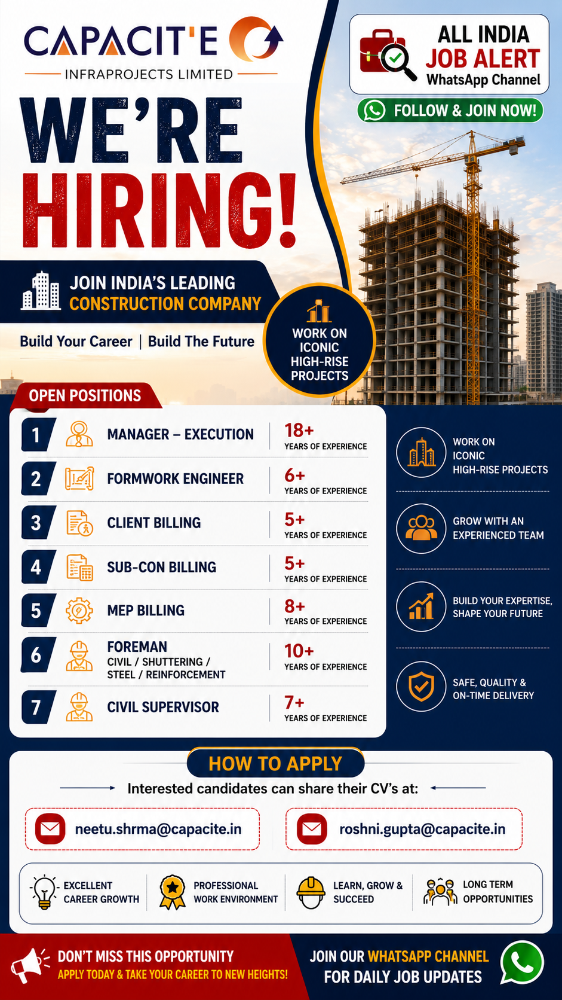

Capacite Infraprojects Limited has announced a new recruitment drive for experienced construction professionals. The company is inviting applications for multiple engineering and site management positions for high-rise residential and commercial building projects across India.
Candidates having relevant construction experience can apply for positions including Manager – Execution, Formwork Engineer, Client Billing Engineer, Sub-Contract Billing Engineer, MEP Billing Engineer, Foreman and Civil Supervisor. This is an excellent opportunity for experienced professionals looking to build a long-term career with one of India's leading construction companies.
| Position | Experience |
|---|---|
| Manager – Execution | 18+ Years |
| Formwork Engineer | 6+ Years |
| Client Billing Engineer | 5+ Years |
| Sub-Contract Billing Engineer | 5+ Years |
| MEP Billing Engineer | 8+ Years |
| Foreman (Civil / Shuttering / Steel / Reinforcement) | 10+ Years |
| Civil Supervisor | 7+ Years |
Capacite Infraprojects Limited is one of India's leading construction companies specializing in high-rise residential, commercial and institutional building projects. The company has successfully completed several landmark developments for reputed developers across the country. With modern construction technology, experienced engineering teams and strong project management systems, Capacite has earned a reputation for delivering quality projects on time.
The company focuses on innovation, safety, quality and customer satisfaction. Employees get opportunities to work on premium projects while improving their technical knowledge and career growth. Capacite provides a professional working environment where experienced engineers, supervisors and site management professionals work together to deliver world-class construction projects.
Selected candidates will be responsible for planning, supervising and executing construction activities according to project requirements. Manager – Execution will monitor project progress, coordinate with clients and ensure timely completion. Formwork Engineers will manage shuttering systems and site execution. Billing Engineers will prepare RA Bills, BOQs and client billing documents. MEP Billing Engineers will handle billing activities related to mechanical, electrical and plumbing works. Foremen and Civil Supervisors will supervise labour teams, maintain productivity and ensure work quality at the construction site.
All employees are expected to follow company quality standards, safety regulations and project schedules. Candidates should be able to coordinate with consultants, contractors and internal engineering teams for smooth execution of work.
Salary will be offered according to experience, qualifications and interview performance. Employees may receive career growth opportunities, exposure to premium construction projects, professional learning, performance-based increments and the opportunity to work with experienced engineering teams.
Interested and eligible candidates can share their updated Resume/CV through the official HR email IDs mentioned below. Make sure your resume includes your latest work experience, qualification and contact details before sending your application.
Email 1: neetu.shrma@capacite.in
Email 2: roshni.gupta@capacite.in
1. Which company is hiring?
Capacite Infraprojects Limited.
2. What type of company is Capacite?
High-rise building and infrastructure construction company.
3. What is the minimum experience required?
5+ years (depending on the position).
4. Which positions are available?
Manager, Formwork Engineer, Billing Engineer, MEP Billing, Foreman and Civil Supervisor.
5. How can I apply?
Send your updated CV to the official HR email IDs.
6. Is this a full-time job?
Yes.
7. Is construction experience mandatory?
Yes, relevant construction experience is preferred.
8. What documents are required?
Resume, educational certificates, experience certificates and ID proof.
9. Will only shortlisted candidates be contacted?
Yes.
10. Does Capacite offer career growth?
Yes, employees get opportunities to work on premium projects and build long-term careers.
Get daily private jobs, government jobs and walk-in interview updates directly on WhatsApp.
Join WhatsApp Channel